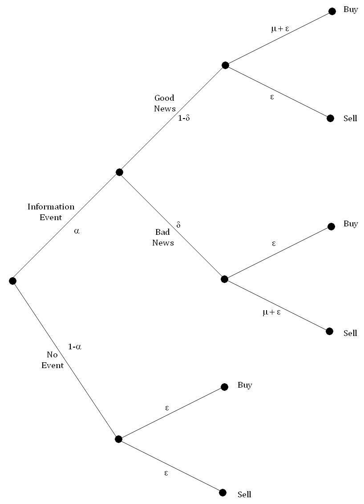
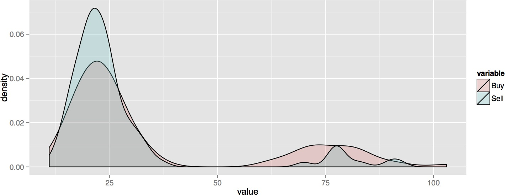
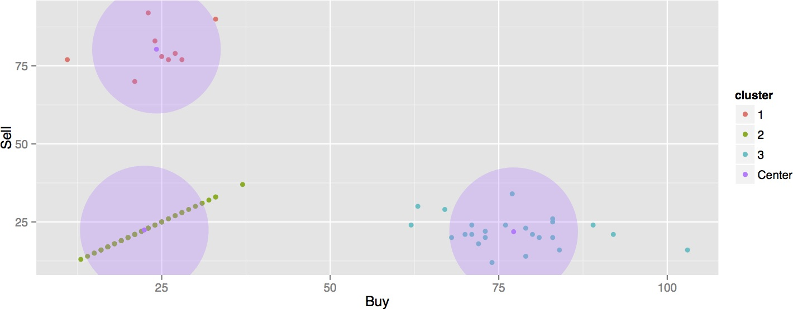
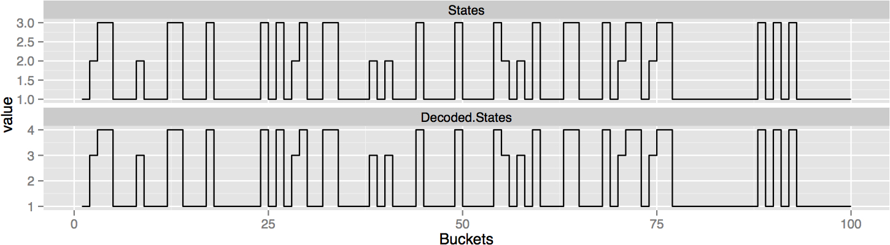
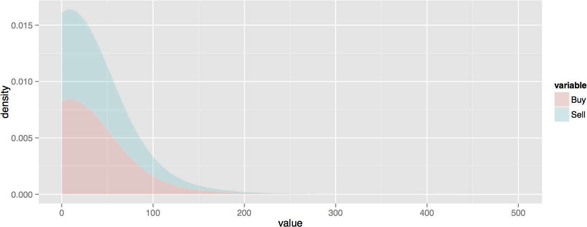
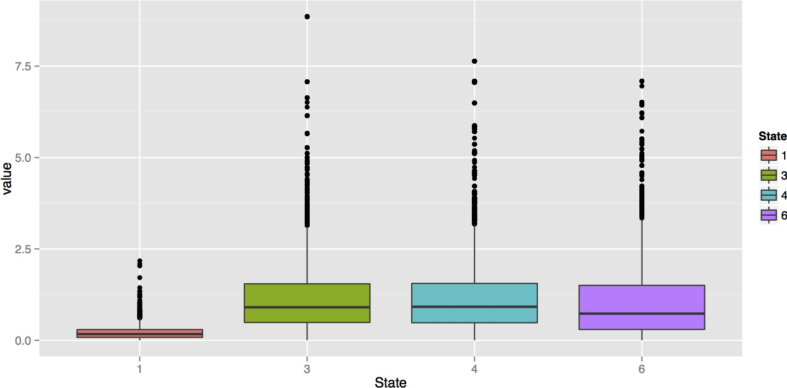

The Lemon Problem

- Introduction to Adverse Selection, PIN, VPIN
- Sequential Trade Model and Simulation of Data
- Demonstration of HMM decoding of states with cluster analysis
- Regressing VPIN against hidden states
- Empirical study results
Nicholas Head


\(\alpha\): Probability of an 'Information Event'
\(\delta\): Probability of it being bad news
\(\mu\): Arrival rate of informed traders
\(\epsilon\): Arrival rate of uninformed traders
Assume arrival rates follow Poisson mixture distributions, then parameters can be estimated via MLE hence enabling Probability of Information-based Trading (PIN) to be computed: \[\text{PIN} = \frac{\alpha \mu}{\alpha \mu + 2 \epsilon}\]
(Easley & O’Hara - 1996)
Trades grouped into equal sized volume buckets \(\tau = 1 \dots n\) each of size \(V\)
Perform bulk classification of buckets e.g. Z% classified as buy, and 1-Z% classified as sell: \[V_{\tau}^B = \sum_{i = t(\tau - 1) + 1}^{t(\tau)} V_i Z \left(\frac{S_i - S_{i-1}}{\sigma_{\Delta S}}\right)\] \[V_{\tau}^S = V - V_{\tau}^B\]
The total expected arrival rate is: \[\underbrace{\alpha (1 - \delta) (\epsilon + \mu + \epsilon) }_\text{Volume from good news} + \underbrace{\alpha \delta (\mu + \epsilon + \epsilon) }_\text{Volume from bad news} + \underbrace{(1 - \alpha) (\epsilon + \epsilon) }_\text{Volume from no news} = \alpha \mu + 2 \epsilon\]
Volume Synchronised Probability of Information-based Trading (VPIN) can hence be derived: \[VPIN = \frac{\alpha \mu}{\alpha \mu + 2 \epsilon} = \frac{\alpha \mu}{V} \approx \frac{\sum_{\tau = 1}^n |V_{\tau}^S - V_{\tau}^B|}{n V}\] Volume-Synchronized Probability of Informddddde
\[\alpha =0.28, \delta = 0.33, \mu = 55, \epsilon=22.3\]
while (j <= n) {
if (runif(1) < alpha) {
if (runif(1) < delta) {
Vbuy[j] = rpois(1, epsilon)
Vsell[j] = rpois(1, mu + epsilon)
} else {
Vbuy[j] = rpois(1, mu + epsilon)
Vsell[j] = rpois(1, epsilon)
}
} else {
Vbuy[j] = rpois(1, epsilon)
Vsell[j] = Vbuy[j]
}
j=j+1
}
\[\alpha =0.28, \delta = 0.33, \mu = 55, \epsilon=22.3\]

\[\alpha =0.28, \delta = 0.33, \mu = 55, \epsilon=22.3\]

Let \(\{X_t \equiv (B_t, S_t): t = 1,2, \dots T \}\) and \(\{C_t \equiv (C_{b;t}, C_{s;t}) : t = 1,2, \dots T\}\)
Conditional probability of observing \(b_t\) buy orders and \(s_t\) sell orders \[\begin{align} \begin{aligned}\label{eq:bivarPois} p_{i,j}(X) &= Pr(X_t = x | C_{b;t} = i, C_{s;t} = j) \\ &= e^{- \lambda_{b;i}} \frac{(\lambda_{b;i})^{b_t}}{b_t !} e^{- \lambda_{s;j}} \frac{(\lambda_{s;j})^{s_t}}{s_t !} \\ \end{aligned} \end{align}\]
In matrix form: \[\mathbf{P}(x) = \begin{pmatrix} p_1(b_t) p_1(s_t) & & 0 \\ & \ddots & \\ 0 & & p_m(b_t) p_n(s_t) \end{pmatrix}\]
Unconditional hidden state distribution: \[u_{i,j}(t) = Pr(C_{b;t} = i, C_{s;t} = j), t = 1,\dots,T\]
Let \(\{X_t \equiv (B_t, S_t): t = 1,2, \dots T \}\) and \(\{C_t \equiv (C_{b;t}, C_{s;t}) : t = 1,2, \dots T\}\)
Let \(\{X_t \equiv (B_t, S_t): t = 1,2, \dots T \}\) and \(\{C_t \equiv (C_{b;t}, C_{s;t}) : t = 1,2, \dots T\}\)
Let \[\gamma_{i,j;k,l}(t) = Pr(C_{b;t+1} = k, C_{s;t+1} = l | C_{b;t} = i, C_{s;t} = j)\]
Transition probability matrix: \[\boldsymbol{\Gamma}(1) = \begin{pmatrix} \gamma_{1,1;1,1} \qquad \gamma_{1,1;1,2} & \cdots & \gamma_{1,1;m,n-1} \qquad \gamma_{1,1;m,n}\\ \gamma_{1,2;1,1} \qquad \gamma_{1,2;1,2} & & \gamma_{1,2;m,n-1} \qquad \gamma_{1,2;m,n}\\ \vdots & \ddots & \vdots \\ \gamma_{m,n-1;1,1} \qquad \gamma_{m,n-1;1,2} & & \gamma_{m,n-1;m,n-1} \qquad \gamma_{m,n-1;m,n}\\ \gamma_{m,n;1,1} \qquad \gamma_{m,n;1,2} & \cdots & \gamma_{m,n;m,n-1} \qquad \gamma_{m,n;m,n} \end{pmatrix}\]
Hence the likelihood (where \(\boldsymbol{\delta}\) is the stationary hidden state distribution, assuming it exists) \[L_T = \boldsymbol{\delta} \mathbf{P}(x_1) \boldsymbol{\Gamma} \mathbf{P}(x_2) \dots \boldsymbol{\Gamma} \mathbf{P}(x_T) \mathbf{1'}\]
\[\alpha =0.28, \delta = 0.33, \mu = 55, \epsilon=22.3\]

Simulation parameters: \[\lambda_b = \begin{pmatrix} \epsilon_b \\ \epsilon_b + \mu_b \\ \epsilon_b \end{pmatrix} = \begin{pmatrix} 22.3 \\ 77.3 \\ 22.3 \end{pmatrix} \qquad \lambda_s = \begin{pmatrix} \epsilon_s \\ \epsilon_s \\ \epsilon_s + \mu_s \end{pmatrix}= \begin{pmatrix} 22.3 \\ 22.3 \\ 77.3 \end{pmatrix}\]
Fitted estimates: \[\hat{\lambda}_b = \begin{pmatrix} \epsilon_b \\ \epsilon_b + \mu_b \\ \epsilon_b \end{pmatrix} = \begin{pmatrix} 22.21 \\ 79.83 \\ 22.12 \end{pmatrix} \qquad \hat{\lambda}_s = \begin{pmatrix} \epsilon_s \\ \epsilon_s \\ \epsilon_s + \mu_s \end{pmatrix}= \begin{pmatrix} 21.95 \\ 21.95 \\ 73.38 \end{pmatrix}\]
Conditional distribution of the hidden states given the observations \[\begin{align} \begin{aligned}\label{eq:localDecoding} Pr(C_t = i | \mathbf{X}^{(T)} = \mathbf{x}^{(T)}) &= \frac{Pr(\mathbf{X}^{(T)} = \mathbf{x}^{(T)}, C_t = i)}{Pr(\mathbf{X}^{(T)} = \mathbf{x}^{(T)}}\\ &= \frac{\alpha_t(i) \beta_{t}(i)}{L_T} \end{aligned} \end{align}\]






Mismatch between theoretical model and empirical data
Possible issues with translation process from time to volume bars
Data issues: E-Mini S&P 500 futures contracts vs SPY ETF
Numerical underflow with computational implementation